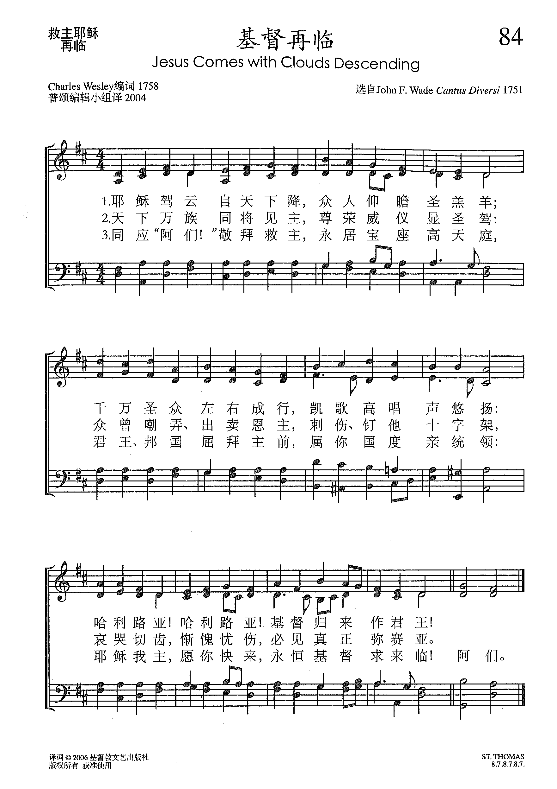

0479 0348 Lo, He comes with clouds descending
_Charles
Wesley 基督再臨 HELMSLEY
▲
| 簡介
Lo, He Comes with Clouds Descending |
| Despite unclear musical origins, the
result here is a characteristic early Methodist hymn tune, notable for
its breadth and range. It effectively sets a text of similarly mixed
sources, one that Charles Wesley regarded as related to “Thy kingdom
come” in the Lord’s Prayer. |
Lo! He comes with clouds descending, Once for guilty sinners slain
Author: Charles Wesley (1758)
|
生命聖詩 - 146
基督再臨 (Lo, He Comes with Clouds Descending) |
基督再临歌
|
|
1 Lo! he comes with clouds descending,
once for favored sinners slain;
thousand, thousand saints attending
swell the triumph of his train.
Alleluia! Alleluia!
God appears on earth to reign.
2 Ev'ry eye shall now behold him,
robed in dreadful majesty;
those who set at naught and sold him,
pierced, and nailed him to the tree,
deeply wailing, deeply wailing,
shall the true Messiah see.
3 Ev'ry island, sea, and mountain,
heav'n and earth, shall flee away;
all who hate him must, confounded,
hear the trump proclaim the day:
Come to judgment! Come to judgment!
Come to judgment, come away!
4 Now Redemption, long expected,
see in solemn pomp appear!
All his saints, by man rejected,
now shall meet him in the air.
Alleluia! Alleluia!
See the day of God appear!
5 Yea, amen! let all adore thee,
high on thine eternal throne;
Savior, take the pow'r and glory,
claim the kingdom for thine own.
O come quickly, O come quickly;
alleluia! come, Lord, come.
Source: Trinity Psalter
Hymnal #386
|
基督昔日捨身救人，
今日駕雲由天降。
千萬聖徒隨伴主旁，
高唱凱歌聲悠揚。
哈利路亞！哈利路亞！
基督再臨為君王。
天下眾人都將見主，
顯赫威儀震天下。
賣主、戲主、釘主之人，
懊悔、憂愁，又害怕，
悲哀痛哭，悲哀痛哭，
今才認識彌賽亞。
萬世期待完全救贖，
莊嚴榮耀今得見。
昔日聖徒遭人厭棄，
今日欣逢主在天。
哈利路亞！哈利路亞！
樂哉得見主聖面。
救主高登永恆寶座，
我眾同心虔敬拜。
求主執掌榮耀王權，
建立國度在人間。
求主快臨，求主快臨，
永生真神快降臨。 |
昔在人间舍身救主，
今日乘云降下方；
千万圣众左右成行，
高唱凯歌声悠扬：
哈利路亚！
基督再来为君王。
天下众人皆将见主，
赫赫威仪从天下；
侮主卖主钉主罪人，
懊悔忧愁又害怕，
悲哀痛哭，
今才认识弥赛亚。
昔日受难创伤钉痕，
存留身上耀光芒；
千千欢呼万万喝彩，
得赎圣民齐宣扬：
喜不自胜，
荣耀伤痕在眼前。
救主高居永生宝座，
我众诚心同敬拜；
求主执掌威权荣耀，
收取万邦归统治：
哈利路亚！
独一至尊永治理。 |
|

http://sooopu.com/html/301/301400.html

|
| |
|
|
Lo! He comes with clouds descending, Once for guilty sinners slain
Author: Charles Wesley (1758)
Published in 715
hymnals
这诗首见于一七五八年《为万民代求圣诗集》，灵感可能源于桑尼克写于一七五二年的同名圣诗。一七六零年美登把上述两诗合而为一，后世诗集因此出现好几个不同版本。
http://www.xueshengshi.com/?p=10768
简介（一）
（来源：《岁首到年终》）
这离开你们被接升天的耶稣，你们见祂怎样往天上去，祂还要怎样来。（徒 1:11）
主必快要回来，因祂的应许决不落空。祂的降生、受死、复活、升天、再来，是神救恩一贯的计划，是互相紧接地关连着。如果祂不再来，神救恩的一切成果便终成泡影，所以祂的再来是父神计划中必然发生的事实，并且是极其迫近了。
试看今天世界的军事、政治、经济、社会、人心、地震、饥荒、瘟疫以及信徒和教会的情形，处处都在应验圣经中的预言。这促使我们要时刻儆醒，常常祈求，忠心事奉主（路
21:36）。如果我们殷勤预备，心中热切地爱慕祂，我们就要和使徒约翰一同说：「主阿！我愿祢来。」（启 22:20）
这首「救主降临」是英文圣诗四大名作之一。今天所用的版本，已经过多人的杰作而合成的。原作者系 John Cennick（1718 –
1755）其父母是贵格会会友，幼受严格家训， 13 岁赴伦敦做学徒，生活放荡，走入歧途， 18
岁受卫斯理约翰带领而献身传道，后加入莫拉维弟兄会，在爱尔兰传道，积劳成疾竟于 38 岁英年早逝，此诗乃其 1750
年之作品，字里行间，可看出他的火热心怀，奔放感情与自己情调。
本诗后经 Charles Wesley 修改于 1758 年编入其代祷圣诗集内。 1760 年再由Martin Madan
将他们二人的作品合并起来，而成为目前所用的「救主降临」歌。
1 仰看救主昔曾舍命，今自天乘云降临；
千万圣徒结队成行，欢唱凯歌震乾坤：
哈利路亚！哈利路亚！基督君王今降临。
2 千万百姓举目瞻仰，救主吓吓大威严；
昔日卖主钉主同党，都聚集在主面前，
悲哀痛哭，悲哀痛哭，今天见真弥赛亚面。
3 诚心所愿向主敬拜，神有威信到永远；
救主耶稣愿祢快来，建立国度在人间，
哈利路亚！哈利路亚！惟主基督掌王权！
＊恩典是神的乐意倾向将福气赐给不配得福的人。── 陶恕
https://www.xueshengshi.com/?p=1830
http://www.congsing.org/lo_he_comes.html
The Second Advent (Rev. 1:7)
John Cennick, 1752, stanzas 3, 4, 5; Charles Wesley, 1758, stanzas 1, 2, 5;
combined by Martin Madan, 1760
Addressed to all men
|
Lo! he comes with clouds descending, |
Is. 30:30; Matt. 26:64; Rev. 14:14–15 |
|
once for favored sinners slain; |
Heb. 9:28; Rev. 5:12 |
|
thousand thousand saints attending |
1 Thess. 3:13; Jude 14 |
|
swell the triumph of his train. |
|
|
Alleluia! |
|
|
God appears on earth to reign. |
Mal. 3:2 |
|
|
|
|
Ev’ry eye shall now behold him, |
Rev. 1:7 |
|
robed in dreadful majesty; |
Job 37:22; Ps. 93:1 |
|
those who set at naught and sold him, |
Acts 2:36 |
|
pierced, and nailed him to the tree, |
Zech. 12:10; Heb. 10:29 |
|
deeply wailing, |
Amos 5:16; Matt. 24:30 |
|
shall the true Messiah see. |
|
|
|
|
|
Ev’ry island, sea, and mountain, |
Rev. 16:20; 21:1 |
|
heav’n and earth, shall flee away; |
Rev. 20:11 |
|
all who hate him must, confounded, |
Ps. 68:1; Mic. 7:16–17 |
|
hear the trump proclaim the day: |
Ps. 47:5; Joel 2:1; Matt. 24:31 |
|
Come to judgment! |
John 5:29 |
|
Come to judgment, come away! |
|
|
|
|
|
Now Redemption, long expected, |
Is. 63:4; Luke 21:28; Eph. 4:30 |
|
see in solemn pomp appear! |
|
|
All his saints, by man rejected, |
Matt 10:21; Mark 13:13 |
|
now shall meet him in the air. |
1 Thess. 4:16–17 |
|
Alleluia! |
|
|
See the day of God appear! |
2 Pet. 3:12 |
|
|
|
|
Yea, amen! let all adore thee, |
Ps. 69:34 |
|
high on thine eternal throne; |
Is. 6:1; Heb. 8:1 |
|
Savior, take the pow’r and glory, |
Mark 13:26; Luke 21:27; Rev. 19:1 |
|
claim the kingdom for thine own: |
Matt. 6:10; Rev. 11:15 |
|
oh, come quickly; |
Rev. 22:20 |
|
alleluia! come, Lord, come. |
|

In the center of the east wall of the Sistine Chapel a cluster of angel
trumpeters ride down on cloud to herald Christ’s judgment day. Two of them
point to Scripture, explaining to the terror-filled inhabitants of earth that
the day had been promised there. Others point their long trumpets, like
blunted spears, directly at individuals below. Expressions of smug
determination sit on many faces in the group. Protestants may balk at the
implications of a Last Judgment painting that pictures Christ as a vindictive
conqueror eager to redress the wrongs of his own crucifixion and the countless
saints and martyrs that throng around him. They should re-read John’s
apocalypse. Every congregation needs a hymn that terrifies unbelievers and
consoles believers in its description of the Last Judgment, for this is
teaching and admonition of the best sort. In our most persecuted hour, when we
have (in that rarest of moments) been entirely in the right and the
non-believer in the wrong, yet it is we who suffe, only this promised judgment
will satisfy our desires for redress. When made to dwell richly in us, the
hymn above can bring to us the satisfaction we crave in the face of injustice.
Though drawing on dozens of scriptural images about the Last Day, the hymn
takes as its starting point Revelation 1:7. The first stanza opens with its
image but moves quickly on to a theological proposition. Christ, the one who
was once slain, is now coming in triumph on the clouds. The contrast between
the Man of Sorrows and the Ancient of Days is striking, especially as we move
into the second stanza. There, those who pierced him deeply wail as they see
him who would have been a true Messiah even to them. The very earth itself
melts away before him, to be made anew. In the fourth stanza, we turn from the
condemned to the vindicated. There we find Christ described as Redemption
personified, appearing before his saints who rise up to meet him. But the last
stanza reminds us that all we have hitherto described has been but a
biblically-informed vision of events yet to come. As Christ requires of us in
the second petition of his model prayer, we are to pray that these events
would come soon.
Those who do not write poetry may be under the false impression that poems
come in their finished form out of a fit of muse-inspired fury, written down
in perfection after hours of agonized labor from a single genius. In
actuality, though this may happen, the best poets have poets as friends (one
thinks of Coleridge and Wordsworth) and use those friendships as whetstones
for their writing. This hymn began as a rather rough-hewn but promising work
by John Cennick in 1752 and was touched up by Charles Wesley and Martin Madan
(all three being leaders in the English evangelical revival) in the decade
that followed. It survives to us now in a much improved form, and by that form
it chiefly communicates the ideas just surveyed. The first word, “lo!”
prepares us for the wonder of it all. The picture of a train swollen and
filled with millions of saints is beautiful in and of itself. Here those
saints become embodied triumph for the returning King. That train is attached
to the robe of the second stanza, which is another embodied idea—dreadful
majesty. The trumpet’s awful fanfare is then given a text: “Come to judgment!
Come to judgment! Come to judgment, come away!” The four-syllable half-lines
that are repeated toward the end of the stanza in all tunes (twice in HOLYWOOD/ST.
THOMAS and three times in HELMSLEY)
are in every instance edgy, from the trumpet call just mentioned to the
breathless petition of the last stanza. Like the angels of Michelangelo’s
painting, their message is direct.
So too is the tune HOLYWOOD.
The melodic motif of the first measure accounts, if transposition is allowed,
for a third of the entire tune. Bring in the third and fourth measures, and
you’ve accounted for eight of the tune’s twelve measures. Allow for a change
in contour, and you’ve accounted for ten of the twelve (see musical example).

Yet, the repetition at the small-scale does not lead to repetition at the
large scale, which lends the tune the sense that
it is continually developing without any repetition whatever. Note that,
though the structure of the stanza suggests lines 3–4 should be set to the
same melody as lines 1–2 (as in a bar-form tune),
they aren’t: they are new yet somehow familiar. Thus the tune is fitting for a
hymn on the Last Judgment. For in that day, though all we see will be new to
our eyes we will have a sense that all is as coherent and meaningful as if
we’d been expecting it our whole lives.
https://hymnary.org/text/lo_he_comes_with_clouds_descending_once
Notes
Scripture References:
st. 1 = Matt. 24:30, Rev. 5:11-13
st. 2 = Rev. 1:7, Zech. 12:10, John 19:37
In 1750 John Cennick, a
friend of John and Charles Wesley (PHH
267), wrote an Advent hymn that began, "Lo! he cometh, countless
trumpets blow before his bloody sign!" Cennick's hymn was published in his Collection (1752).
Charles Wesley completely rewrote the text and published his version in Hymns
of Intercession for all Mankind (1758) with the title "Thy Kingdom
Come" (changed to "The Second Advent" in other editions). Though later
hymnals occasionally mixed Cennick's lines with Wesley's, the Psalter
Hymnal includes most of Wesley's original text.

Like so many of Wesley's
texts, "Lo! He Comes" abounds with biblical imagery. Stanzas 1, 2, and 4 are
based on the rich language of John's apocalyptic visions recorded in
Revelation 1:7 and 5:11-13. The third stanza reminds us that Christ's wounds
and atoning death should lead us to greater faith and ultimately to our
worship of Christ in glory (as Christ himself reminded the doubting Thomas).
Stanza 4 is a majestic doxology to Christ, our Savior and Lord.
Liturgical Use:
Advent; other worship services that focus on Christ's coming again in glory.
--Psalter Hymnal
Handbook
HELMSLEY
Composer: Martin Madan; Composer
(melody): Thomas Augustine Arne; Composer
(attributed to): Thomas Olivers (1763)
Published in 63
hymnals
Notes
John Wesley attributed the
tune HELMSLEY to Thomas Olivers in Wesley's 1765 Sacred Melodies with
his brother's text of "Lo! He Comes with Clouds Descending."

However, Olivers is said
to have heard the tune on the street somewhere. Since the first line
resembles a tune by violinist and composer Thomas Augustine Arne composed
for Thomas and Sally, or The Sailor's Return in 1761, it is
speculated the tune was composed by Arne. Most likely, the tune comes from a
1763 edition Martin Madan's Collection of Psalms and Hymn Tunes Sung
at the Chapel of Lock Hospital. Madan was the chaplain at Lock
Hospital.
From Let the people
sing: hymn tunes in perspective by Paul Westermeyer, 2005, GIA
Publications, Inc.

https://www.umcdiscipleship.org/resources/history-of-hymns-lo-he-comes-with-clouds-descending-hawn
Charles Wesley
Charles Wesley
By C. Michael Hawn
Lo, He Comes with Clouds Descending
by Charles Wesley
The United Methodist Hymnal, No. 718
Lo, he comes with clouds descending,
once for favored sinners slain;
thousand, thousand saints attending
swell the triumph of his train.
Hallelujah! Hallelujah!
God appears on earth to reign.
This poem comes as close as poetic verse can in scaling the heights of splendor,
majesty, and mystery as described in Revelation. “Lo! He comes with clouds
descending” by Charles Wesley (1707-1788) appears as hymn thirty-nine of forty
hymns in John Wesley’s collection, Hymns of Intercession for All Mankind (1758)
under the sectional title “Thy Kingdom Come!” in four six-line stanzas. While
this hymn is in a variety of sections in hymnals —most notably Advent, but also
in Ascension, Christ’s Return and Judgment, End Time, and others—the context in
which it appears in John Wesley’s collection offers a very different
understanding of the text.
While it is common to cite the collection that first included a hymn, we do not
often place a hymn explicitly in the context of the collection and what its use
and placement indicate about the theological perspective and insight of the
editor, in this case John Wesley (1703-1791). This collection bears examination
as it is unusual in the compilations prepared by the Wesleys, at least to some
degree, and sets the context of our hymn. The hymns in Hymns of Intercession for
All Mankind address in amazing detail various categories of intercessory prayer.
The bold categories are my own, while the subcategories are those designated by
John Wesley in the collection:
Hymns for the world, the Church, and its leaders:
For all Mankind (Hymn 1)
For Peace (Hymn 2)
For the Church Catholic (Hymn 3)
For the Church of England (Hymns 4, 5)
For the Ministers of the gospel (Hymns 6, 7, 8, 9)
Hymns for the nation and various national leaders and governmental
organizations:
For his Majesty King George (Hymn 10)
For the Prince of Wales (Hymn 11)
For the King of Prussia (Hymns 12, 13, 14)
For the British Nation (Hymn 15)
For the Magistrates (Hymn 16)
For the Nobility (Hymn 17)
For the Parliament (Hymn 18)
For the Fleet (Hymn 19)
For the Army (Hymn 20)
For the Universities (Hymns 21, 22)
Hymns addressing pastoral intercessions, usually a single stanza:
For all that travel by land or by water (Hymn 23)
For all women laboring of child (Hymn 24)
For all sick Persons (Hymn 25)
For Young Children (Hymn 26)
For all Prisoners and Captives (Hymn 27)
For the fatherless Children (Hymn 28)
For Widows (Hymn 29)
A final section of intercessions, many controversial by twenty-first century
perspectives, that expose the false, even heretical, theology of a variety of
groups viewed outside the Christian faith:
For our Enemies, Persecutors, and Slanderers (Hymn 30)
For our unconverted Relations (Hymn 31)
For the Jews (Hymn 32)
For the Turks (Hymn 33)
For the Heathen (Hymn 34)
For the Arians, Socianians, Deists, Pelagians (Hymn 35).
Following this list, “Lo! He comes in clouds descending” concludes the
collection as one of five hymns under the category of “Thy Kingdom Come!,” one
of the first petitions of The Lord’s Prayer (Matthew 6:10, KJV). Charles Wesley,
having enumerated a comprehensive list of intercessory needs, establishes that
God, in Christ, is the cosmic “monarch” of all earthly kings, nations,
institutions, individuals in need, and all religions and theologies, and
philosophies found on earth, even if they do not recognize God.
Given the subject of these poems, it is hard to imagine that most would have had
any liturgical use, though they might be seen as a primer for intercessory
prayer or even a lyrical theological treatise on the judgment of Christ or the
second coming. Of the final five hymns, four, including our hymn, appear in
selected hymnals with varying degrees of success, the other hymns being:
“He Comes! He Comes! the Judge Severe” (Hymn 37)
“Rise, Ye Dearly Purchased Sinners” (Hymn 38)
“Lift Your Heads, Ye Friends of Jesus” (Hymn 40)
But none have struck a chord like “Lo! He Comes”!
The hymn appears virtually unchanged in The United Methodist Hymnal (1989) with
two exceptions: The first is a minor substitution in stanza four of “Hallelujah”
for “JAH, JEHOVAH” from Psalm 68:4. The second is the repetition of a word or
words in the fifth line of each stanza, for example, “Hallelujah!” in stanza
one. The original resulted in a rather awkward meter: 8.7.8.7.4.7. By repeating
the word or words in the fifth line of each stanza, the meter was evened out
(8.7.8.7.8.7), allowing it to be used with several standard tunes, most notably
for American hymnals REGENT SQUARE and HELMSLEY, the latter appearing in The
United Methodist Hymnal. HELMSLEY, often attributed to Thomas Olivers
(1710-1778), is a hamlet in Yorkshire, England. J. R. Watson, editor of the
Canturbury Dictionary of Hymnology, notes, “HELMSLEY is entitled OLIVERS in
Wesley’s Select Hymns: with Tunes Annext (Second Edition, 1765) and is thought
to be an arrangement by him of a piece entitled ‘Miss Cathley’s Hornpipe’.”
Whatever the source of HELMSLEY, it is a magnificent pairing with this majestic
text and is certainly fitting for a cathedral. Neil Dixon in the Canterbury
Dictionary of Hymnology suggests that the incipit (opening line) was adapted
from “Lo! He Cometh, Countless Trumpets” published by the Moravian John Cennick
(1718-1755) in his Collection of Sacred Hymns (1752), a hymn in the same meter
as our hymn and on the same theme, even with some phrases in common. Charles
Wesley’s borrowing or closely adapting another’s work should not be confused
with our twenty-first understanding of plagiarism, but understood as a common
eighteenth-century poetic technique of “imitation.”
In stanza 1,
"the “thousand, thousand saints attending” are reminiscent of Charles’s
Wesley’s “O for a Thousand Tongues to Sing” published nearly two decades earlier
in his Hymns and Sacred Poems (1740). Indeed, reference to “thousand” is a
favorite hyperbole (poetic exaggeration) of hymn writers from the days of
Wesley’s older contemporary Isaac Watts (1674-1748) through the nineteenth
century gospel song era. In this case, the hyperbole is exponentially
increased—“thousand, thousand”—to indicate the magnificent spectacle of
innumerable “saints [who are] attending” and who “swell the triumph of
[Christ’s] train.” This is truly a picture of the Monarch of monarchs appearing
in unparalleled splendor! The paradox of the entire scene appears in the second
line of the opening stanza: “Once for favored sinners slain!”
Stanza two
enhances the scope of this royal scene: “Every eye shall now behold him,” a
direct quotation from Revelation 1:7: “Behold, he cometh with clouds; and every
eye shall see him, and they also which pierced him: and all kindreds of the
earth shall wail because of him” (KJV). As in this verse of Scripture, the
stanza reminds us of the paradox of the one who is coming:
Those who set at naught and sold him,
pierced and nailed him to the tree,
deeply wailing . . .
Christ’s passion is brought even more to the forefront in stanza 3:
The dear tokens of his passion
still his dazzling body bears . . .
The final stanza places this magnificent scene in the cosmic realm:
Yea, Amen! Let all adore thee,
high on thy eternal throne . . .
This throne cannot be contained on earth, but extends to the cosmos. Indeed, the
final line is a petition: “Everlasting God, come down!”
J. R. Watson notes that this is truly a “sublime” hymn—an eighteenth-century
designation reserved only for the finest of artistic works. (For example,
“sublime” was used by some critics to describe parts of Handel’s Messiah.)
It is a magnificent hymn, with a powerful tune, but like many sublime hymns it
treads a narrow line between being too wildly enthusiastic (as in Cennick’s
version [cited earlier] and being too restrained. Charles Wesley’s version deals
with this problem finely and with sensitivity (Watson, 2002, 199).
It is interesting to note that a hymn that suggests Advent in some hymnals today
would not probably have been seen in that light in the Wesleys’ day. While the
Book of Common Prayer (1662) contained collects for Advent, there were no
standard hymnal collections in use by the Church of England; metrical psalm
singing rather than hymn singing was dominant at that time. While the shape of
the Christian Year was similar, the relative weight given to various seasons
differed from what we recognize today, following the reforms of the Second
Vatican Council (1962-1965). While probably not an Advent hymn in its time,
neither is our hymn simply another “Second Coming” hymn in its original context.
Rather than being included in a collection designated for a key festival of the
Christian Year such as the Wesleys’ collections Hymns for the Nativity of our
Lord (1745), Hymns for Our Lord’s Resurrection (1746), Hymns for Ascension-Day
(1747), or Whitsunday [Pentecost] Hymns (1746), the context of the somewhat
curious collection Hymns of Intercession for All Mankind (1758) suggests a
posture of intercessory prayer in which people of all ranks and positions—from
the most common to the most elevated, the young and old, the bereft and blessed,
believers and heretics—all find themselves prostrate before a cosmic spectacle
in which the once-crucified Messiah now sits upon a throne of radiance beyond
anything that we can imagine, surrounded by countless—“thousand,
thousand”—sinners that are now saints.
Undoubtedly, the context of the British monarchy and the scope of worldwide
colonial influence in the eighteenth century both influence the metaphors that
shape this text along with biblical images. However, Wesley, an ardent supporter
of the British monarchy, knows the One to whom he owes supreme allegiance. Thus,
the paradox of this hymn is that even eighteenth-century England in all of its
might, splendor, and influence does not compare to the cosmic Monarch of the
risen Christ.
This article is a complementary piece to another article on this same title.
Click here to read another analysis of this same hymn.
FOR FURTHER READING:
Dixon, Neil. "Lo! He comes with clouds descending." The Canterbury Dictionary of
Hymnology.Canterbury Press, accessed October 20, 2017,
http://www.hymnology.co.uk/l/lo!-he-comes-with-clouds-descending.
Watson, J. R. An Annotated Anthology of Hymns. New York: Oxford University
Press, 2002.
_____. "Thomas Olivers." The Canterbury Dictionary of Hymnology. Canterbury
Press, accessed October 20, 2017,
http://www.hymnology.co.uk/t/thomas-olivers.
https://en.wikipedia.org/wiki/Lo!_He_comes_with_clouds_descending
From Wikipedia, the free encyclopedia
Jump to navigationJump
to search
"Lo! He comes with clouds descending"
is a hymn with
a text by John Cennick (1718–1755)

and Charles
Wesley (1707–1788). Most commonly sung at Advent,
the hymn derives its theological content from the Book
of Revelation relating imagery of the Day
of Judgment. Considered one of the "Great
Four Anglican Hymns" in the 19th century, it is most commonly sung to
the tune Helmsley, first published in 1763.
The text has its origins in a hymn "Lo! He
cometh, countless Trumpets" by John
Cennick published in his Collection of Sacred Hymns of 1752.[1] This
was substantially revised by Charles Wesley for publication in Hymns of
intercession for all mankind of 1758.[2][3] Some
hymnals present a combination of the two texts.[2] The
content of the text and particularly the title are derived from Revelation
chapter 1, verse 7, which tells of the Second
Coming of Jesus
Christ.[2]
The last stanza depicts the Last
Judgement with a vindictiveness and objectivity which are similar to
the medieval Dies
irae sequence:
Every eye shall now behold him
Robed in dreadful majesty;
Those who set at nought and sold him,
Pierced and nailed him to the tree,
Deeply wailing
Shall the true Messiah see.
According to Lionel Adey, It is an example
of how the Methodist hymn
tradition, as demonstrated by the works of Wesley, spans a wide range of
texts ranging from very intimate reflections to more impersonal themes.[4]
In the 19th century it was considered one of
the "Great
Four Anglican Hymns" on the basis of a survey Anglican Hymnology published
by the Rev. James King in 1885. King surveyed 52 hymnals from the member
churches of the Anglican
Communion around the world and found that 51 of them included this
hymn (alongside 'All Praise to Thee, my God, this Night', 'Hark!
The Herald Angels Sing' and 'Rock
of Ages').[5]
Helmsley[edit]
The tune Helmsley is usually attributed to Thomas
Olivers, a Welsh Methodist preacher and hymn-writer.[6] Anecdotal
stories about the tune's composition suggest Olivers heard the tune
whistled in the street and derived his melody from that; the most likely
source is an Irish concert song "Guardian angels, now protect me".[2][6] George
Arthur Crawford, in A
Dictionary of Music and Musicians (1900), discusses the origin:[7]
This tune claims a notice on account of the
various opinions that have been expressed respecting its origin. The
story runs that Thomas Olivers, the friend of John Wesley, was attracted
by a tune which he heard whistled in the street, and that from it he
formed the melody to which were adapted the words of Cennick and
Wesley's Advent hymn...The source from whence 'Olivers' was derived
seems to have been a concert-room song commencing 'Guardian angels, now
protect me,' the music of which probably originated in Dublin.
The tune of "Guardian Angels" is as follows:[7]
The hymn-tune melody "Helmsley" derived from
this tune first appeared in the second edition of Wesley's Select Hymns
with Tunes annexed of 1765 under the name of "Olivers":[8]
Crawford disproves the suggestion that the
tune is based on a hornpipe from
the burlesque Golden
Pippin of c.1771, noting the chronology makes it likely that the
hornpipe was based on the hymn tune, or at least derived from the shared
source "Guardian angels".[7] In
some publications, the tune is attributed to Thomas
Arne on account of a similarity to an air (possibly "Auspicious
spirits guard my love") from Arne's chamber opera Thomas
and Sally of 1760, but the resemblance is slight and the date of
that opera make this unlikely.[2][6]
By 1763, the text appeared in print paired
with the text "Lo! He comes with clouds descending" in Martin
Madan's Collection of Psalm and Hymn Tunes sung at Lock
Hospital of 1763.[9] Madan's
version is a combination mostly comprising Wesley's text, but substituting
some of Cennick's verses.[2] This
presents the tune in a familiar form with only a few stylistic variations
compared to the modern tune:
Other associated
tunes[edit]
The hymn is occasionally printed and sung
with other tunes in hymnbooks including "St Thomas", "Regent Square",
"Westminster Abbey", "Kensington New" and "Cum Nubibus".[10] The
1982 Lutheran
Worship hymnal sets it to the considerably more sombre tune Picardy.[11]
Brooke Foss Westcott, Bishop of Durham, recalled in 1901 that Queen
Victoria was displeased after an organist played a different tune at St
George's Chapel, Windsor Castle, and requested only Helmsley in
future.[2][12]
References[edit]
-
^ Broome,
J R (1988). Life and Hymns Of John Cennick. Herpendon,
Hertfordshire: Gospel Standard Trust Publications. ISBN 9780903556804.
-
^ Jump
up to:a b c d e f g Bradley,
Ian (2006). Daily Telegraph Book of Hymns. London: Bloomsbury.
pp. 77–78.
-
^ Wesley,
Charles (1758). Hymns
of intercession for all mankind. Bristol: E Farley.
-
^ Adey,
Lionel (1986). Hymns
and the Christian Myth. UBC Press. p. 118. ISBN 9780774844901.
-
^ King,
James (1885). Anglican
hymnology: being an account of the 325 standard hymns of the highest
merit according to the verdict of the whole Anglican Church.
London: Hatchards.
-
^ Jump
up to:a b c Glover,
Raymond F. (1995). The Hymnal 1982 companion – Volume 3, Part 1.
New York: Church Hymnal Corporation. p. 109.
-
^ Jump
up to:a b c Crawford,
George Arthur (1900). "Lo! He comes with clouds descending". A
Dictionary of Music and Musicians (1450-1889). London:
Macmillan. pp. 161–162.
-
^ Wesley,
Charles (1761). Select
hymns with tunes annext: designed chiefly for the use of the people
called Methodists. London.
-
^ Madan,
Martin (1770). "The
Collection of Psalm and hymn tunes, sung at the Chapel of the Lock
Hospital". London: Broderip & Wilkinson.
-
^ "Lo!
He comes with clouds descending". Hymnary.org.
Retrieved 7 December 2017.
-
^ "Lo,
He Comes with Clouds Descending". Hymnary.org.
Retrieved 23
December 2018.
-
^ Westcott,
Brooke Foss (1901). "Church and Organ Music". The Musical Times and
Singing Class Circular. 42 (695): 25–26.
External links[edit]
 |
Wikisource has original text related to this article:
|
Words: John Cennick (b. Dec. 12, 1718; d. July 4, 1755)
(Text altered by
Charles Wesley and Martin Madan)
Music: Regent Square, by Henry Smart (b. Oct. 26, 1813; d.
July 6, 1879)
Links:
Wordwise Hymns (about John Cennick)
The Cyber
Hymnal
Note: A number of different tunes have been used with this hymn,
including Sicilian Mariners Hymn. (See the Cyber Hymnal
link for others.)
As it appears in the Cyber Hymnal, this hymn as seven
stanzas. But often today only the first two and the last are used. The
hymn concerns the second coming of Christ, with a special emphasis on
the dramatic difference between the scene of His earthly passion, and
that of His return. In the first case there was humiliation, cruel
torture and death. In the second, He will come in honour and majesty,
and with triumph over His enemies.
Once he was mockingly clothed in a purple robe; then He will be robed
in “dreadful majesty” (CH-2)–a kingly state that fills watchers with awe
and dread. Once He wore a crown of thorns (Matt. 27:27-29); then His
head will be crowned with diadems of glory (Rev. 19:12). Once multitudes
ridiculed Him and cried, “Crucify Him!” but then there will be
repentance and worship. Once He was hung upon a cross to die; then He
will be seated upon His messianic throne. “Behold, He is coming with
clouds, and every eye will see Him, even they who pierced Him. And all
the tribes of the earth will mourn because of Him” (Rev. 1:7; cf. Zech.
12:10).
Stanza CH-6 (see below) is not used today, and the wording seems more
stilted. But it does refer to something for which I believe there is
biblical support: that in eternity, the body of Christ will still bear
the scars of Calvary. We know His resurrection body did, since He
invited Thomas to touch the marks of His passion (Jn. 20:27). And even
in His vision of heaven John sees the Son of God as “a Lamb as though it
had been slain” (Rev. 5:6). This would seem to be the one jarring note
in all the perfections of the heavenly kingdom. But far from being
repulsive to us, it will be the “cause of endless exultation.”
The dear tokens of His passion
Still His dazzling body bears;
Cause of endless exultation
To His ransomed worshipers;
With what rapture, with what rapture,
Gaze we on those glorious scars!
Some object to the line “God appears on earth to reign” (CH-1). The
contention is that it is God the Father who should be spoken of as
“God,” and that it is wrong to use the term of the Lord Jesus. That even
if we believe in the Trinity, and in the deity of Christ, the
terminology is wrong. But the New Testament writers do refer to Christ
in this way (Jn. 20:28; Acts 20:28; Rom. 9:5; Tit. 1:3; 2:13; Heb. 1:8),
and hence it is appropriate, though infrequently used.
On another point, have you ever wondered how it is that “every eye
will see Him” (Matt. 24:30; Rev. 1:7) when Christ returns (cf. CH-2)?
How that must have puzzled the apostles! How could the entire population
of the earth be able to see Him? Of course, we must leave room for a
miracle in this regard. But there are a couple of possibilities apart
from that. One is that the procession from heaven to earth, with saints
and angels attending (Jude 1:14; Rev. 19:14), will take some time, and
all will see it as the earth revolves beneath it. The other is that with
the growing access all have to televisions and computers, we will
witness it in that way. Time will tell!
Questions:
1) The Bible says of the saints in heaven that “God will wipe away every
tear from their eyes” (Rev. 7:17; 21:4). What causes for tears will
there be, when we first stand before the Lord Jesus Christ?
2) How should the truths expressed in this hymn affect our lives
today?
Links:
Wordwise Hymns (about John Cennick)
The Cyber
Hymnal
https://wordwisehymns.com/2011/01/03/lo-he-comes-with-clouds-descending/
 Tex on July
3, 2010
Tex on July
3, 2010
I have so enjoyed Matt’s weekly postings of hymnodic
reflections that I’ve jumped at the
opportunity to continue the series during his absence.
This week’s hymn, another of the four
most popular Anglican hymns, is often sung in the days
leading up to Advent. At first glance it might seems
strange to celebrate the second coming of Christ in
conjunction with His first coming, however, the practice of
so doing provides the balance needed to keep the Advent (and
Christmas) themes of Divine love and light from devolving
into mere sentimentality. Remembering the first coming
of Christ in light of the end of all things ought to remind
us how desperately we need a savior—and how immense and
earth-shattering is the good news that God is just and
merciful.
The present text of the hymn has undergone a few redactions
since first being penned by John Cennick, a land surveyor
turned preacher and Moravian evangelist. Cennick was
an acquaintance of the Wesley brothers and this quite
probably accounts for Charles Wesley’s knowledge of the
hymn. The most common version of the text is Wesley’s
and it is the version followed below.
However, the comparison
of Cennick’s version with Wesley’s is
interesting as it brings to light Wesley’s mastery of
English and Scripture as he expounds upon and clarifies the
nascent themes in Cennick’s version.
Lo! He comes with clouds descending,
Once for favored sinners slain;
Thousand thousand saints attending,
Swell the triumph of His train:
Hallelujah! Hallelujah!
God appears on earth to reign.
The theme of the hymn is taken from Revelation 1:7 and
begins and ends with an exhortation to look to the coming
King, Jesus Christ, and celebrate the blessed and glorious
reign of God as the indisputable monarch of all things in
heaven and earth.
Every eye shall now behold Him
Robed in dreadful majesty;
Those who set at naught and sold Him,
Pierced and nailed Him to the tree,
Deeply wailing, deeply wailing,
Shall the true Messiah see.
It is natural to wonder what sort of King it is that is
returning to claim his kingdom and what life will be like
under his rule. If He is to be a just and righteous
ruler, what will that mean for the wicked men and women?
If He is to be a deliverer of His people (a Messiah), what
will that mean for the people, institutions, and beliefs and
practices that have been holding His people captive?
The implication of a just, righteous, and freedom-granting
ruler is that injustice, wickedness and bondage will be
abolished and done away with: Good news for the captive and
the oppressed, bad news for the wicked and the oppressor.
Every island, sea, and mountain,
Heav’n and earth, shall flee away;
All who hate Him must, confounded,
Hear the trump proclaim the day:
Come to judgment! Come to judgment!
Come to judgment! Come away!
Exploring, again, the implications of what is a great
comfort to the Christian, but a terror to the ungodly—God’s
omniscience and omnipresence—the author forcefully suggests
that though heaven and earth would flee from the terrible
presence of the just Judge who will open the secret heart of
all men; the very men who would most hide themselves from
this scrutiny will be compelled to stand before the Judge
and give an accounting of their actions. This is
justice, the terrible equality of all men before God is such
that every man must acknowledge his responsibility for his
deeds. The bribe’s of the wealthy, the words of the
crafty, and the intimidation and power of the extortioner
are all as nothing in face of the just King.
Now redemption, long expected,
See in solemn pomp appear;
All His saints, by man rejected,
Now shall meet Him in the air:
Hallelujah! Hallelujah!
See the day of God appear!
What then do we have to hope for? If the secrets of
all men be made known on the Day of Judgement, then surely
all men will be tried and found wanting. However, the
centerpiece of this hymn, and of the Gospel itself, is the
very good news that redemption has happened and that justice
has been satisfied in such a way that God’s saints might be
welcomed into the retinue of the King without lessening His
justice in any way. Hallelujah, indeed.
Answer Thine own bride and Spirit,
Hasten, Lord, the general doom!
The new Heav’n and earth t’inherit,
Take Thy pining exiles home:
All creation, all creation,
Travails! groans! and bids Thee come!
Such words sound harsh and unfeeling in a day and age where
niceness is one of the cardinal virtues of the land.
However, it is wise to keep in mind that if goods such as
justice and righteousness are to prevail, they come with a
cost: the cost of punishing all that is unjust and evil.
There can be no new heaven and new earth unless the old be
done away with, there can be no universal reign of perfect
goodness and truth unless badness and error are finally and
absolutely defeated. The cry of the Church and of God
the Spirit is for such perfect state to come where all is
peace and harmony and love, where communion between God and
man is like the unity shared by the Blessed Trinity.
The birth pangs are necessary to bring about new life.
The dear tokens of His passion
Still His dazzling body bears;
Cause of endless exultation
To His ransomed worshippers;
With what rapture, with what rapture
Gaze we on those glorious scars!
The King bears in His own body the message of the Gospel.
That which was done out of hatred, rebellion, and pride has
been transformed by Divine Love into the centerpiece of
adoration and praise for all eternity. The facts of
wickedness and evil are acknowledged rather than glossed
over, yet they undergo a powerful metamorphosis as their
sting is turned into a song.
Yea, Amen! let all adore Thee,
High on Thine eternal throne;
Savior, take the power and glory,
Claim the kingdom for Thine own;
O come quickly! O come quickly!
Everlasting God, come down!
The exhortation to look for the coming King in the first
verse modulates into an invocation of that same King in the
last. The great and terrible fact of the Second Coming
provides the impetus for the action of prayer among His
people—given the nature of the King and veracity of His
promise, it behooves His people to act with a faith that
gives expression to their knowledge of Him.
https://mereorthodoxy.com/reading-the-hymns-lo-he-comes-with-clouds-descending/
今天是將臨期(The Season of Advent) 的開始。Advent
是「即將來臨」的意思，將臨期的主調是等待(waiting)，人在等待當中要警醒，察看自己的心有否預備好成為主耶穌的居所，以悔改的心等候主耶穌的來臨。
今年將臨期的屬靈操練活動，增加了一項以傳統詩歌默想的環節。在將臨期的四週，每週均以一首傳統詩歌幫助肢體默想記念主耶穌降生成人的事跡。這表徵着上主介入人類歷史，把人從世界的黑暗中拯救出來的屬靈意義。
第一週是詩歌《基督再臨歌》(Lo! He Comes with Clouds Descending)
是查理衛斯理(Charles Wesley, 1707-1788)
在十八世紀所作的詩歌。查理衛斯理一生創作了六千多首詩歌，他期望能透過詩歌教導會眾信仰的核心信息，故此他所創作的詩歌大多充滿神學意義，讓當時的信眾明白福音信息。
就像《基督再臨歌》，這詩成為將臨期常唱的詩歌，因為它所描述的意境，正正喚醒聖徒等待基督再臨。詩歌的第一段有以下的描述：
Lo, he comes with clouds descending,
once for favored sinners slain;
thousand, thousand saints attending
swell the triumph of his train.
Hallelujah! Hallelujah! Hallelujah!
God appears on earth to reign.
《詩歌翻譯》
基督昔日捨身救人，
今日駕雲由天降。
千萬聖徒隨伴主旁，
高唱凱歌聲悠揚。
哈利路亞！哈利路亞！
基督再臨為君王。
這詩的開頭宣告在最後主耶穌再來時的情境，這與耶穌降生作為對比。主耶穌曾為罪人在十架上遭殺害，但祂最後要以得勝者的姿態再回來，祂從高天架着雲彩降下，最後要統領這地。這與可十四62
主耶穌回答猶太公會的人審問時所表述：「必看見人子，坐在那權能者的右邊，駕著天上的雲降臨」相呼應 。
雖然這詩開頭是描述主耶穌再來的日子，好像並不講到節期所代表的主耶穌降世，但這正正帶出耶穌降世的意義。主耶穌以神的兒子這尊貴的身分，謙卑地在馬槽出生，最後在十架上被釘死，這並決不能掩蓋祂的榮耀，祂最後要在人心掌王權居首位。當黑暗看似仍然在世間遍滿全地，但主耶穌已戰勝黑暗，人若信靠主耶穌，讓祂掌管我們的生命主權，我們的生命也能因祂的介入而得以豐盛。
https://www.wkphc.org/10598/

.jpg)


![{ \time 2/2 \key a \major \relative a' { \repeat volta 2 { a4 cis8.[( d32 e]) d8([ b)] gis[( e]) | a8.[( b32 cis)] b8[( a)] gis[( fis)] e4 | a8[( e)] a[( cis]) b([ e,]) b'([ d]) | cis8.[( d32 e]) d8[( cis]) cis4( b) | a4 cis8.[( d32 e]) d8([ b)] gis[( e]) | a8.[( b32 cis)] b8[( a)] gis[( fis)] e4 | a4 b8( cis) fis,4 d'8.[ e32 fis] | \grace fis16 e8[( \grace d16 cis8]) \grace e16 d8[( \grace cis16 b8]) \grace b4 a2 }
e'4 a8.( fis16) \grace fis8 e4. e8 | e8.([ d16)] d8.([ cis16)] cis4 b | e8.[( cis16]) e8.[( cis16]) d8.[( b16]) d8.[( b16]) | cis[\( a e' cis] a'[ e d] cis \appoggiatura cis4 b2\) | a4 e'8([ cis)] a'[( e]) cis([ a)] | e4 e16( gis b d) cis8 a e <cis cis'> | fis4 gis8. a16 e8([ a)] d[( fis)] | fis16\([ e d cis] e[ d] cis[ b]\) \appoggiatura b4 a2 \bar "||" } }](https://upload.wikimedia.org/score/p/4/p4i9ms4f5ef688v1ip7zinpvz2dbr2c/p4i9ms4f.png)
![{ \time 2/2 \relative c'' { \repeat volta 2 { c4 e8 g b,8. a16 g4 | a( b16 a) c8 g8. f16 e4 | g4. g8 c4. d8 | e8 g f e \grace e4 d2 } d4( e16 d) e8 f4 e | c( d16 e) d8 e[ d] c4 | e( f16 e) g8 f[ e] d4 | c4. e8 g,4. f'16 a | e4 d c2 \bar "||" } }](https://upload.wikimedia.org/score/t/m/tmjcgffhmd0eqc8bg3fcjo6ujbfkkoo/tmjcgffh.png)
![{ \time 4/4 \key g \major \relative g' { g4 b8( d) \grace g,8 fis4 \grace e8 d4 | e8.[( fis16] g8[) fis16( e)] d8.[\trill c16] b4 | d4. d8 g4. a8 | b[( d]) c[( b]) \appoggiatura b4 a2 \bar "||" g4^\markup { \smaller \italic Pia } b8( d) fis,4 d4 | e8.[( fis16] g8[) fis16( e)] d8.[ c16] b4 | d4. d8 g4. a8 | b[( d]) c[( b]) \appoggiatura b4 a2 \bar "||" a8.[ b16] a8[ b] c4\trill b | g8.[( a16] g8[)( c]) b8.\trill[( a16] g4) | b8.[( c16] b8[)( d]) c8.\trill([ b16)] a4 | g \times 2/3 { g8 a b } d,4 c' | b( a\trill) g2 \bar "||" } }](https://upload.wikimedia.org/score/p/m/pmja92xjjok52wirothkksnla34t26z/pmja92xj.png)